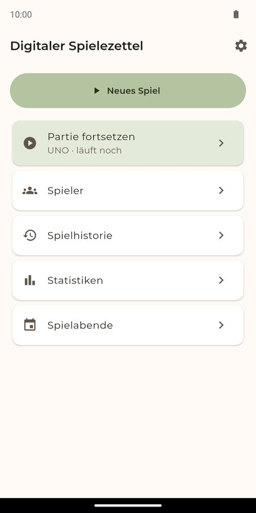
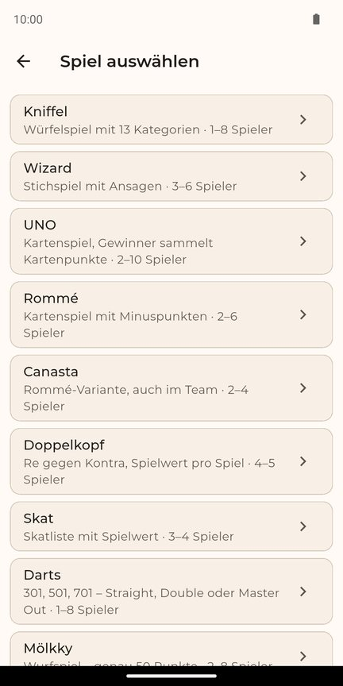
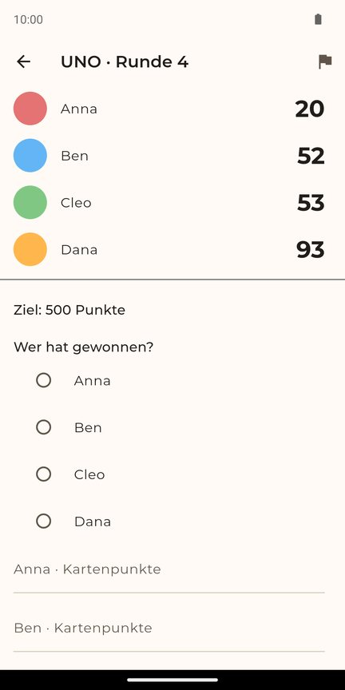
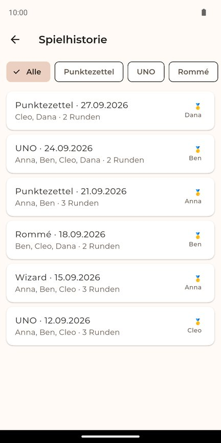
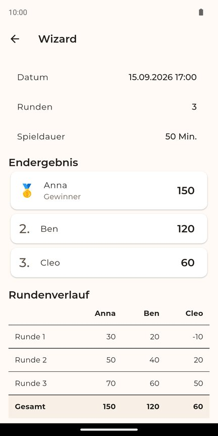
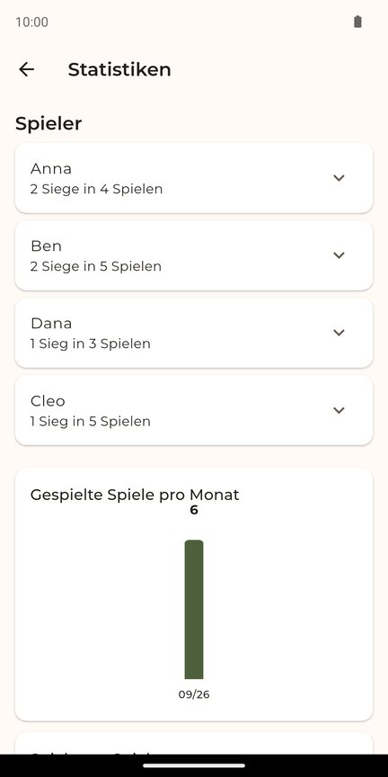

Digitaler Spielezettel
Punkte zählen für deine Spielerunde. Klar, offline, von mir.
- Android
- Offline
- Ohne Werbung
- Ohne Konto
- Hell und Dunkel
Schluss mit Zettel und Stift
Der Digitale Spielezettel zählt die Punkte für deine Spielerunde, speichert jede Runde sofort und zeigt dir danach Ergebnisse, Verlauf und Statistiken. Nach einem Neustart machst du genau dort weiter, wo du aufgehört hast.






Spiele
- Kniffel
- Wizard
- UNO
- Rommé
- Canasta (auch im Team)
- Doppelkopf
- Skat
- Darts (301, 501, 701)
- Mölkky
- Schwimmen / 31
- Phase 10
- Mau-Mau (Kartenwerte einstellbar)
- Freier Punktezettel für alle anderen Spiele
Was die App kann
- Letzte Runde mit einem Tipp rückgängig machen.
- Sieger und Platzierungen ansehen, direkt eine Revanche starten.
- Historie mit Filter, Statistiken und Spielabende mit Platzierungspunkten.
- Ergebnisse als PDF exportieren, Backup sichern und wiederherstellen.
- Große Bedienelemente, Unterstützung für große Schrift, komplett auf Deutsch.
Datenschutz
Alle Daten bleiben auf deinem Gerät. Die App braucht kein Internet, keine Registrierung und keine Berechtigungen, und sie enthält weder Werbung noch Tracking. Details stehen in der Datenschutzerklärung.
Tester gesucht
Die App ist noch nicht im Play Store veröffentlicht. Für den Start brauche ich 12 Tester, die die App zwei Wochen lang installiert lassen. Benutzen musst du sie nicht ständig, ein Spieleabend reicht.
- Schick mir die E-Mail-Adresse deines Google-Kontos, das du im Play Store nutzt (per Nachricht oder an appdev@keinbiervor4.de). Ich trage dich als Tester ein.
- Öffne auf deinem Android-Handy den Link unten und tippe auf „Tester werden“.
- Installiere die App danach über den Play Store (Link zur App im Play Store).
- Lass sie bitte mindestens 14 Tage installiert. Ich sage dir Bescheid, ab wann die Zeit zählt.
Der Link funktioniert nur mit einem Google-Konto, das ich vorher als Tester eingetragen habe, und erst, wenn der Test von Google freigegeben ist. Bis dahin zeigt Google eventuell eine Fehlermeldung. Nur für Android, kein iPhone.